In dem Register "Stammdaten" der Benutzeranlage können neue Benutzer angelegt, sowie bestehende editiert werden. Hierbei stehen die Grundstammdaten zur Verfügung.
Hinweis
Die Berechtigungen werden im Register Berechtigungen hinterlegt.
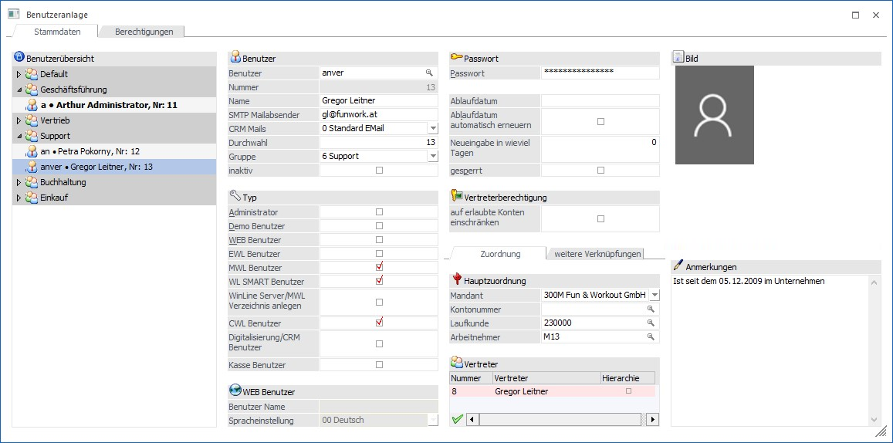
Das Fenster ist in zwei Bereiche geteilt:
ü Benutzerübersicht
In der
Baumstruktur werden die einzelnen Benutzergruppen und die darin angelegten
Benutzer angezeigt.
ü Benutzerstamm
Hier können neue
Benutzer angelegt bzw. für bestehende Benutzer Veränderungen vorgenommen
werden.
Benutzerübersicht
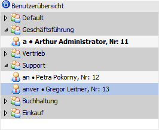
In der Baumstruktur werden alle Benutzergruppen und die darin angelegten Benutzer (Benutzer - Name - Benutzernummer) angezeigt. Dabei werden nur die Benutzergruppen dargestellt, in der bereits ein Benutzer angelegt wurde.
Hinweis
Benutzergruppen können im Programm Benutzer Gruppen angelegt bzw. verändert werden.
Benutzerstamm
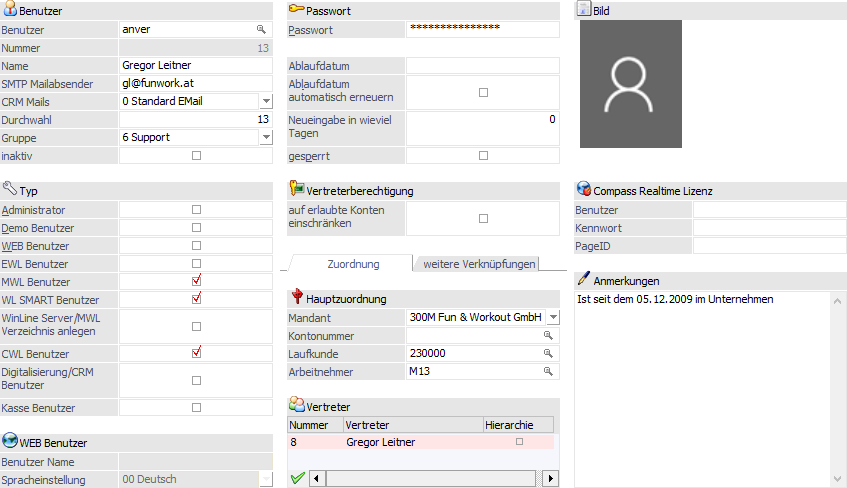
In diesem Bereich des Fensters können bestehende Benutzer verändert oder neue Benutzer angelegt werden. Die Neuanlage eines Benutzers erfolgt dabei durch eine Befüllung (Überschreiben) des Feldes "Benutzer".
Benutzer
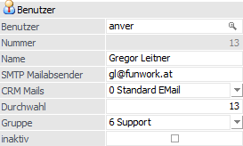
Ø Benutzer
Eingabe des Benutzernamens (Login), max. 20stellig, alphanumerisch
Durch Drücken der F9-Taste kann nach allen bereits angelegten Benutzern gesucht und ggfs. ein bestehender Benutzer übernommen werden. Wenn ein Benutzername eingegeben wird, werden via Autovervollständigung bereits angelegte Benutzer angezeigt und können ebenfalls zur Bearbeitung aufgerufen werden, wobei hier nur nach dem Benutzernamen "gesucht" wird.
Achtung
Wenn an dieser Stelle ein bestehendes Login mit einem neuen Eintrag überschrieben wird, dann wird dieser neue Eintrag als neuer Benutzer angelegt.
Ø Nummer
Die interne Benutzernummer wird vom Programm automatisch vergeben, sobald der neue Benutzer gespeichert wird und kann nicht geändert werden.
Ø Name
Hier kann der komplette Benutzername eingegeben werden (z.B. Benutzer = Harald, Name = Harald Maier). Dieser Name kann auf allen Auswertungen der WinLine mit der Variable [0/002] (View 0, Var 2) angedruckt werden.
Ø SMTP Mailabsender
Wenn in den E-Maileinstellungen (WinLine Start - Parameter - Einstellungen… - Register "Mail") eingestellt ist, dass ein SMTP-Mail-Client verwendet werden soll, dann muss in diesem Feld die E-Mail-Adresse des Benutzers eingetragen werden, mit welcher dann die Mails aus der WinLine bzw. der WEBEdition versendet werden sollen. D.h. der Absender wird dann aus den Informationen "Name" und "SMTP Mailabsender" zusammengesetzt.
Ø CRM Mails
Über die Auswahlliste kann gesteuert werden, wie die Mails, welche vom WinLine CRM versendet werden, übermittelt werden sollen. Dabei gibt es 3 Optionen:
ü 0 - Standard EMail
Mit dieser
Option werden die Standardeinstellungen des Clients (WinLine START - Parameter -
Einstellungen… - Register Mail) verwendet.
ü 1 - MesoMail Service
Mit dieser
Option wird das MesoMail-Service verwendet, um die Mails zu verschicken. D.h.
die Mails werden nur innerhalb der WinLine transportiert.
ü 2 - MesoMail Service und Standard
EMail
Mit dieser Option werden die Nachrichten sowohl via MesoMail-Service
als auch über die Standardeinstellung versendet.
Ø Durchwahl
Wenn in der WinLine mit TAPI gearbeitet wird, kann hier die Durchwahl des Benutzers eingetragen werden, über die er im Normalfall zu erreichen ist. Diese Durchwahl wird in weiterer Folge für das Durchstellen / Übernehmen von Gesprächen / CRM-Einträgen benötigt.
Ø Gruppe
Aus der Auswahlliste muss eine "System-Benutzergruppe" ausgewählt werden, in welcher der Benutzer angelegt werden soll.
Achtung
Die Gruppenzuordnung ist ein wichtiger Bestandteil für die Gestaltung der Berechtigungsprofile.
Hinweis
Die Bezeichnungen der System-Benutzergruppen können im Programm "Benutzer Gruppen" angepasst werden.
Ø inaktiv
Mit dieser Option kann ein Benutzer auf Inaktiv gesetzt werden. Dieses hat zur Folge, dass der Benutzer nicht mehr in das Programm einsteigen kann und keine Lizenz mehr "verbraucht".
Da der Benutzer trotz der Inaktivität vorhanden bleibt, steht dieser dem Programm für z.B. Auswertungen, Auditprotokolle oder dergleichen zur Verfügung, so dass weiterhin nachvollzogen werden kann, wer z.B. an einem Datensatz eine Änderung vorgenommen hat.
Hinweis
Bei dem Benutzer, mit welchem man in den WinLine ADMIN eingestiegen ist, kann diese Option nicht gesetzt werden.
Achtung
Inaktive Benutzer werden in der Benutzerübersicht des Fensters nicht mehr angezeigt. Soll der Benutzer wieder reaktiviert werden, muss wie folgt vorgegangen werden:
ü das Programm Benutzerliste aufrufen
ü die Checkboxen "WinLine Benutzer" und "WEB Benutzer" deaktiviert
ü es werden nur noch die inaktiven Benutzer angezeigt
ü durch Aktivierung der Option "CWL Benutzer" erfolgt dann die Reaktivierung des Benutzers
Typ
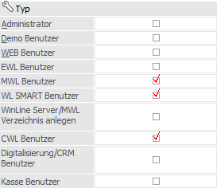
Über die nachfolgenden Optionen kann gewählt werden, welche Funktionen der Benutzer ausführen darf. Dabei gibt es folgende Möglichkeiten, die auch kombiniert werden können:
Ø Administrator
Ist diese Checkbox aktiviert handelt es sich bei diesem Benutzer um einen sogenannten Volladministrator. Volladministratoren haben automatisch die höchste Berechtigungsstufe (-1) und können in ihren Zugriffsrechten nie eingeschränkt werden (auch nicht über Berechtigungsprofile).
Hinweis
Wenn ein Benutzer nur für bestimmte Bereiche Administrator sein soll, dann können diese Teiladministratorberechtigungen über das Unterregister Administrator (im Register "Berechtigungen" zu finden) vergeben werden.
Ø Demo Benutzer
Bei Aktivieren der Checkbox wird der Benutzer als Demo-Benutzer gekennzeichnet. Ist die Checkbox nicht aktiviert, gilt der Benutzer als normaler Benutzer und unterliegt den Einschränkungen der vorhandenen Lizenzen und deren Gültigkeitsbereichen.
Hinweis
Der Unterschied zwischen einem Demo-Benutzer und einem normalen Benutzer ist folgender:
ü Beim Erstaufruf des Datenstandes (Mandanten) wird - sofern keine Echtlizenz vorhanden ist - der Datenstand mit dem aktuellen Systemdatum gekennzeichnet. Von diesem Zeitpunkt an können ALLE Programmfunktionen mit dem DEMO-Benutzer für eine Zeit von 60 Tagen bearbeitet und getestet werden.
ü Es ist dabei NICHT möglich Datensätze mit einem Datum (z.B. Buchungsdatum) NACH Ablauf dieser 60-Tagefrist zu bearbeiten. ECHT-Benutzer können alle Datenbereiche und Programmfunktionen bearbeiten, die innerhalb der Gültigkeitsgrenzen der erworbenen Lizenzen liegen.
ü Des Weiteren können Demo-Benutzer im WinLine EXIM nur jeweils 10 Datensätze pro Lauf ex- bzw. -importieren.
Ø WEB Benutzer
Wenn diese Option aktiviert wird, dann kann der Benutzer auch gleich als WEB Benutzer (Benutzer der auch in der WinLine WEBEdition arbeiten kann) angelegt werden.
Ø EWL Benutzer
Wenn diese Checkbox aktiviert wird, dann kann der Benutzer auch die EWL (Enterprise Connect) aufrufen. Die Aktivierung ist allerdings nur dann möglich, wenn auch ein WinLine Server installiert wurde. Des Weiteren muss für solch einen Benutzer immer ein Passwort hinterlegt werden.
Achtung
Dieser Benutzertyp wird nicht mehr unterstützt.
Ø MWL Benutzer
Wenn diese Checkbox aktiviert wird, dann kann der Benutzer auch die Multiplattform WinLine aufrufen. Die Aktivierung ist allerdings nur dann möglich, wenn auch ein WinLine Server installiert wurde.
Was in der Multiplattform WinLine getan werden darf ist von den folgenden Typen abhängig:
ü CWL Benutzer
ü Digitalisierung/CRM Benutzer
ü Kasse Benutzer
Achtung
Für einen WinLine mobile-Benutzer muss immer ein Passwort hinterlegt werden. Des Weiteren ist die Nutzung eines WinLine 64-Bit-Servers ratsam!
Ø WL SMART Benutzer
Mit dieser gesetzten Checkbox steht dem Benutzer über die WinLine mobile das SMART Cockpit zur Verfügung, welches alle Funktionen beinhaltet, die dem WinLine SMART Benutzer zur Verfügung stehen.
Achtung
Für einen WinLine SMART-Benutzer muss immer ein Passwort hinterlegt werden. Ein Zugriff auf die Desktop-Version des WinLine ist nicht möglich!
Ø WinLine Server/MWL-Verzeichnis anlegen
Wird diese Checkbox gesetzt, so wird für den WinLine mobile bzw. WinLine SMART Benutzer eigenes "Home"-Verzeichnis am Server angelegt. Ist für den Benutzer bereits ein Verzeichnis vorhanden, so wird dies entsprechend dargestellt.
Hinweis
Diese Option ist nur verfügbar, wenn bei dem Benutzer die Checkbox "EWL Benutzer", "MWL Benutzer" oder "WL SMART Benutzer" aktiviert wurde.
Achtung
Wird ein Benutzer über die Benutzeranlage als WinLine mobile oder WinLine SMART Benutzer gekennzeichnet, so wird für diesen Benutzer automatisch kein eigenes Home-Verzeichnis angelegt. In diesem können wiederum benutzerspezifische Einstellungen bezüglich Sprache, Formulare usw. angegeben werden.
Ist das Benutzerverzeichnis nicht vorhanden, so werden die erforderlichen Informationen aus den Dateien des WinLine Server-Stammverzeichnisses gelesen (in der Regel "EWL").
Wird ein Benutzer im Menüpunkt "MSM/Workstation Wizard" als EWL-Benutzer definiert, so wird für diesen ein eigenes Home-Verzeichnis angelegt. Die Demo-Benutzer "a" und "Mesonic" sind nach der WinLine Server-Installation automatisch als EWL Benutzer definiert und haben ebenfalls kein eigenes Benutzerverzeichnis.
Ø CWL Benutzer
Der Benutzer kann gemäß der vorhandenen Lizenz und der restlichen Einstellungen mit der WinLine (Desktop-Version) arbeiten.
Ø Digitalisierung/CRM Benutzer
Der Benutzer kann den Programmbereich des CRMs innerhalb der WinLine (Desktop-Version) benutzen.
Ø Kasse Benutzer
Wird diese Checkbox aktiviert, so können die Funktionen der WinLine KASSE (Desktop-Version) genutzt werden.
WEB Benutzer
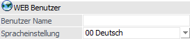
Wurde bei dem Benutzer der Typ "WEB Benutzer" aktiviert, so stehen die folgenden Eingabefelder zur Verfügung.
Ø Benutzer Name
Hier wird der Benutzername eingetragen, wobei als Name die Mailadresse verwendet wird. Durch Drücken der F9-Taste kann nach allen bereits angelegten Benutzern gesucht werden.
Ø Spracheinstellung
Aus der Auswahlliste kann die Sprache gewählt werden, in der der Benutzer die Internetseiten betrachten bzw. bearbeiten will. Wenn sich der Benutzer selbst angelegt hat (über Erstanmeldung), dann wird die Sprache verwendet, die der Benutzer beim Surfen verwendet hat.
Bereich "Passwort"
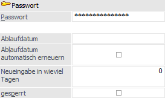
Ø Passwort
An dieser Stelle wird das max. 15stellige Passwort des Benutzers hinterlegt, wobei bei der Eingabe nur Platzhalter (*) angezeigt werden. Nach Bestätigen der Eingabe muss das Passwort durch eine zweite Abfrage bestätigt werden, um Tippfehler auszuschließen.
Achtung
Groß- und Kleinschreibung wird beachtet! Des Weiteren ist ein Passwort zwingende Voraussetzung für alle Arbeiten, welche über den WinLine Server stattfinden. Aus diesem Grund muss bei den folgenden Benutzertypen bzw. Programmnutzungen immer ein Passwort hinterlegt werden:
ü EWL Benutzer
ü Multiplattform WinLine Benutzer
ü WinLine SMART Benutzer
ü Nutzung des Hintergrundprozesses
Hinweis
Standardmäßig (Ausnahme siehe "Achtung") kann hier ein beliebiges Passwort eingegeben werden oder das Passwort kann auch leer gelassen werden. Wenn "sichere" Passwörter verwendet werden müssen, so kann eine Einstellung in der Datei MESONIC.INI vorgenommen werden. Dazu muss folgender Eintrag in der Datei hinzugefügt werden:
[PasswordPolicy]
ComplexPasswords=1
Mit dieser Einstellung müssen die Passwörter mindestens 6 Zeichen lang sein, zumindest einen Groß- und einen Kleinbuchstaben und zwei Zahlen beinhalten. Ist das nicht der Fall wird eine entsprechende Meldung ausgegeben.
Beispiele
|
Passwort |
Gültig |
Grund |
|
Anton |
Nein |
nur 5stellig |
|
Anton |
Nein |
nur 5stellig |
|
Anton1 |
Nein |
nur eine Zahl |
|
anton17 |
Nein |
kein Großbuchstabe |
|
Anton17 |
JA |
|
Ø Ablaufdatum
Hier kann das Ablaufdatum des Passworts eingegeben werden. Meldet sich an diesem Tag (oder danach) der Benutzer an, muss dieser das Passwort ändern. Wird das aktuelle Datum eingetragen, muss der Benutzer bei der nächsten Anmeldung ein neues Passwort vergeben.
Hinweis
Für den Benutzer "meso" kann kein Ablaufdatum hinterlegt werden.
Ø Ablaufdatum automatisch erneuern
Ist diese Checkbox aktiviert, dann wirkt die Einstellung des Felds "Neueingabe in wieviel Tagen".
Ø Neueingabe in wieviel Tagen
An dieser Stelle wird die Anzahl der Tage eingegeben werden, nach denen das Passwort jeweils geändert werden muss.
Hinweis
Für den Benutzer "meso" können keine Ablauftage hinterlegt werden.
Ø gesperrt
Ist diese Checkbox aktiviert, dann kann sich dieser Benutzer nicht mehr in der WinLine anmelden.
Hinweis
Diese Checkbox wird automatisch aktiviert, wenn der Benutzer 3 Mal ein falsches Passwort beim Einstieg in die WinLine eingegeben hat. Erst wenn die Checkbox von einem Administrator wieder deaktiviert wird, kann sich der Benutzer wieder anmelden. Die Lizenzen des Benutzers werden allerdings weiter "verbraucht", d.h. nicht für andere Benutzer freigegeben.
Achtung
Ausgenommen von dieser Funktion ist der Benutzer "meso". Bei diesem Benutzer wird - gleich wie bei einem Netzwerkadministrator - das Konto nie gesperrt.
Vertreterberechtigung
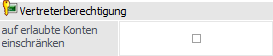
Ø auf erlaubte Konten einschränken
Durch die Aktivierung der Option "auf erlaubte Konten einschränken" werden nur die Konten des bzw. der zugeordneten Vertreter(s) angezeigt / zur Bearbeitung freigegeben. Die Zuordnung der Vertreter erfolgt im Register "Zuordnung" in der Tabelle "Vertreter". Dieses gilt sowohl für CRM- als auch für CWL-Benutzer.
Register "Zuordnung"
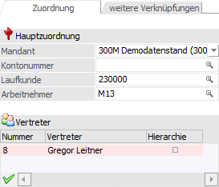
Die folgenden Felder bzw. Einstellungen werden für WinLine WEBEditon-Benutzer und CRM-Vorbelegungen benötigt. Zusätzlich erfolgt der erste Einlogvorgang in die WinLine mobile in den hier angegebenen Mandanten.
Ø Mandant
Aus der Auswahlliste kann der Mandant gewählt werden, in dem die nachstehend angeführten Stammdaten angelegt sind.
Ø Kontonummer
Wenn es sich um einen Debitor handelt, kann hier die entsprechende Kontonummer aus dem Personenkontenstamm hinterlegt werden.
Ø Laufkunde
Bei den Benutzertypen "Interessent", "CWL-Benutzer" und "Interner Mitarbeiter" kann hier eine Kontonummer eingetragen werden, aus denen im WEB dann die Standardinformationen (wie Preisliste etc.) geholt werden.
Ø Arbeitnehmer
Hier kann die AN-Nr. hinterlegt werden, unter welcher der Benutzer im ausgewählten Mandanten angelegt ist. Diese Einstellung wird in weiterer Folge für die Berechtigungsvergabe für den WinLine SMART Benutzer benötigt.
Ø Tabelle "Vertreter"
In dieser Tabelle können die Vertreter des Benutzers zugeordnet werden.
ü Hauptvertreter
Dieser Vertreter
ist farblich unterlegt und wird für die Angabe des aktuellen Vertreter, die
CRM-Vorbelegung, sowie für eine Zuordnung in der WinLine WEBEdition
herangezogen. Mit Hilfe des Tabellenbuttons "aktueller Vertreter in Listen" kann
der Hauptvertreter geändert werden.
ü Weitere Vertreter
Alle weiteren
definierten Vertreter dienen als Zuordnung für die Option "auf erlaubte Konten
einschränken". Durch Aktivierung der Option "Hierarchie" werden hierfür auch die
untergeordneten Vertreter berücksichtigt.
Hinweis
Die Spalte "Name" wird nur bei Hinterlegung der Vertreter gefüllt und im bei einem erneuten Aufruf des Benutzers leer.
Tabellenbuttons
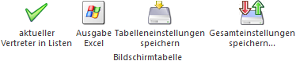
Ø aktueller Vertreter in Listen
Durch Anwahl dieses Buttons wird der Hauptvertreter in der Tabelle "Vertreter" definiert.
Ø Ausgabe Excel
Durch Anwahl des Buttons "Ausgabe Excel" wird der Inhalt der Tabelle an Microsoft Excel übergeben.
Ø Tabelleneinstellungen speichern
Die Spalten einer Tabelle können grundsätzlich an beliebige Positionen verschoben, bzw. in der Breite entsprechend angepasst werden. Durch Anwahl des Buttons "Tabelleneinstellungen speichern" werden die Einstellungen benutzerspezifisch gespeichert und bei dem nächsten Aufruf des Programmpunktes wieder vorgeschlagen.
Ø Gesamteinstellungen speichern
Im Gegensatz zu "Tabelleneinstellungen speichern" können mit "Gesamteinstellungen speichern" mehrere Tabellenaufbauten gespeichert und nach Wunsch geladen werden. Zusätzlich werden Sonderfunktionen der Tabelle (z.B. "Spalte gruppieren") ebenfalls bei der Speicherung bedacht.
Register "weitere Verknüpfungen"
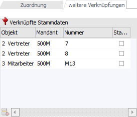
Über die Tabelle "Verknüpfte Stammdaten" können für das WinLine SCORE mandantenübergreifende Verknüpfungen hinterlegen werden.
Ø Tabelle "Verknüpfte Stammdaten"
In dieser Tabelle können vier Arten von Objekten dem jeweiligen WinLine-Benutzer zugeordnet werden:
ü 0 - Benutzer
Mit diesem Typ
kann der WinLine-Benutzer mit einem anderen Benutzer verknüpft werden, z.B. für
die Analyse in WinLine SCORE von einer Datenquelle mit Benutzerzuordnung.
ü 1 - Kontonummer
Mit diesem Typ
kann der WinLine-Benutzer für einen bestimmten Mandanten mit einer Kontonummer
verknüpft werden.
ü 2 - Vertreter
Mit diesem Typ
kann der WinLine-Benutzer für einen bestimmten Mandanten mit einem Vertreter
verknüpft werden. Beispielsweise um ein WinLine-Benutzer mit einem Vertreter in
einer Verkaufsstatistik-Datenquelle in WinLine SCORE zu verknüpfen.
ü 3 - Mitarbeiter
Mit diesem Typ
kann der WinLine-Benutzer für einen bestimmten Mandanten mit einem Mitarbeiter
verknüpft werden. Beispiel: der Benutzer ist mit einem Mitarbeiter im
Lohn-Mandant verknüpft aber mit einem anderen Mitarbeiter im
Auftragsbearbeitungsmandant verknüpft.
Bild
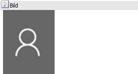
An dieser Stelle wird das Bild des Benutzers dargestellt. Ein neues Bild kann durch Anwahl des aktuellen Bilds oder mit Hilfe des Buttons "Bildersuche" zugewiesen werden.
Anmerkungen
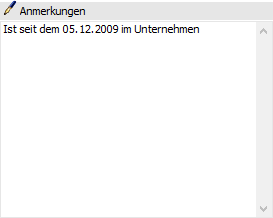
An dieser Stelle können Anmerkungen zu dem Benutzer hinterlegt werden.
Buttons
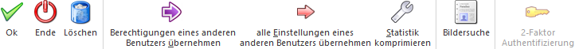
Ø Ok
Durch Anwahl des Buttons "Ok" bzw. der Taste F5 werden die eingetragenen Informationen bzw. der neu angelegte Benutzer gespeichert. Nach dem Abspeichern wird der Fokus automatisch auf den entsprechenden Benutzer in der Baustruktur gesetzt.
Hinweis
Bei neu angelegten Benutzern ist die Vergabe von Berechtigungen (Register Berechtigungen) erst nach dem Abspeichern möglich.
Ø Ende
Durch Anklicken des "Ende"-Buttons bzw. durch Drücken der "ESC"-Taste wird das Fenster geschlossen und alle nicht gespeicherten Änderungen verworfen.
Ø Löschen
Durch Anwahl des Buttons "Löschen" wird der angewählte Benutzer gelöscht.
Hinweis
Wenn der Benutzer, welcher gelöscht werden soll, in der WinLine - in irgendwelchen Bereichen - als "Ersteller" eines Objektes hinterlegt ist, dann wird eine entsprechende Meldung ausgegeben und das Programm Benutzeranlage - Objektberechtigungen vererben geöffnet. Erst wenn dort Stelle ein Benutzer hinterlegt wurde, dem die Rechte vererbt werden sollen, kann der Benutzer endgültig gelöscht werden.
Ø Berechtigungen eines anderen Benutzers übernehmen
Durch den Button "Berechtigungen eines anderen Benutzers übernehmen" können bereits vergebene Berechtigungen von anderen Benutzern auf den ausgewählten Benutzer übernommen werden.
Nach Anwahl des Buttons öffnet sich hierfür der "Benutzer - Matchcode", aus dem der Benutzer gewählt werden kann, von welchem die bestehenden Berechtigungen übernommen werden sollen.
Ø alle Einstellungen eines anderen Benutzers übernehmen
Wenn dieser Button angeklickt wird, können alle Einstellungen (als z.B. den Benutzer-Typ und die Berechtigungen) von einem bestehenden Benutzer übernommen werden. Dazu wird zuerst der Benutzer-Matchcode geöffnet, aus welchem der Benutzer ausgewählt werden kann, von dem die Einstellungen übernommen werden sollen. Mit der Auswahl bzw. der Übernahme gelten folgende Bedingungen:
ü Das Feld "Name" wird nie übernommen
ü Das Feld "SMTP Mailabsender" wird nur übernommen, wenn das Feld vorher leer ist.
ü Das Feld "Durchwahl" wird nur übernommen, wenn das Feld vorher leer ist.
ü Das Feld "Gruppe" wird immer vom ausgewählten Benutzer übernommen.
ü Die Einstellungen bezüglich "Typ" und "alle Berechtigungen" werden ebenfalls vom ausgewählten Benutzer übernommen.
Hinweis
Dieser Button kann nur angeklickt werden, wenn der Benutzer bereits einmal gespeichert wurde und somit eine Benutzernummer vergeben wurde. Ansonsten erscheint eine entsprechende Fehlermeldung.
Ø Statistik komprimieren
Durch die Anwahl des Buttons "Statistik komprimieren" wird die Benutzerstatistiktabelle (Tabelle T012SRV in der System-Datenbank) bis auf die Einträge des letzten Monats geleert.
Hinweis
Im "Auditprotokoll Funktionen" wird die Anzahl der gelöschten Datensätze protokolliert.
Ø Bildersuche
Mit Hilfe dieses Buttons kann ein Bild für den Benutzer gesucht, ausgeschnitten und zugeordnet werden. Hierbei wird zunächst über ein Menü die Quelle des Bilds definiert. Folgende Varianten stehen zur Verfügung:
ü Bildersuche
Es wird das
Programm "Bildersuche" geöffnet.
ü Bildersuche - WinLine
Es wird
das Programm "Bilder in Datenbanken" geöffnet, über welches eine Grafik
ausgewählt werden kann.
ü Bildersuche - Datenträger
Es
wird der Öffnen-Dialog von Windows geöffnet, über welchen eine Grafik ausgewählt
werden kann.
Ø 2-Faktor-Authentifizierung
Die 2-Faktor-Authentifizierung (2FA) ermöglicht es in der WinLine mobile den Zugriff noch stärker zu schützen. Neben der obligatorischen Angabe von Benutzer und Passwort ist bei der Anmeldung zusätzlich die Eingabe eines einmalig generierten, mehrstelligen Pin-Codes (Tokens) erforderlich.
Bevor die Funktionalität innerhalb der Benutzeranlage über diesen Ribbon-Button zum Einsatz kommen kann, müssen folgende Voraussetzungen erfüllt sein.
ü Das Modul "WinLine 2FA" muss in der Lizenz vorhanden sein.
ü Die WinLine mobile muss eingerichtet sein.
ü Die 2FA muss innerhalb der WinLine mobile in der Applikation START aktiviert werden.
ü Der Benutzer muss sich am System mit seinen 2FA-Daten authentifiziert haben.
Hinweis
Die administrative Einrichtung und Bedienung durch den Benutzer wird in dem separaten Kapitel Die 2-Faktor-Authentifizierung (2FA) detailliert beschrieben.
Der Button verfügt über diese zwei aufgeführten Funktionen:

ü
2-Faktor-Authentifizierung
Diese Auswahl ermöglicht es dem
Administrator dem WinLine mobile-Benutzer seine spezifischen 2FA-Informationen
erneut zukommen zu lassen.
ü Token neu erstellen
Diese
Auswahl ermöglicht es dem Administrator die benutzerspezifischen
2FA-Informationen zurückzusetzen. Eine Warnung macht darauf aufmerksam, dass dem
Anwender bei der nächsten Anmeldung ein neuer (QR-)Code übermittelt wird. Dies
hat ebenso zur Folge, dass die erstmalige Authentifizierung an der 2FA-App
erneuert werden muss.
Hinweis
Ist die 2FA nicht eingerichtet, bzw. der 2FA-Anmeldeschritt seitens des Benutzers ist (noch) nicht erfolgt, dann ist dieser Button zwar sichtbar, jedoch ist er ausgegraut und nicht selektierbar.